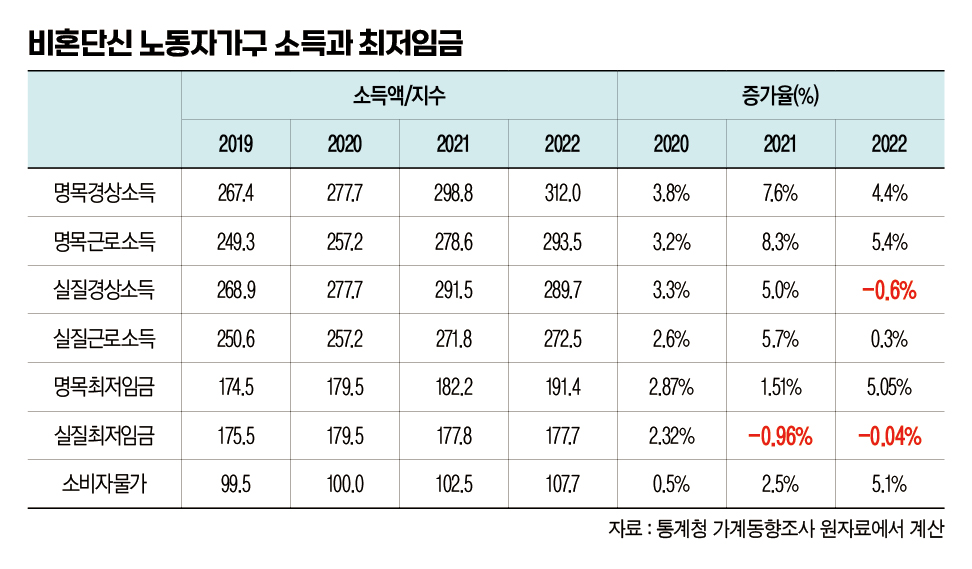
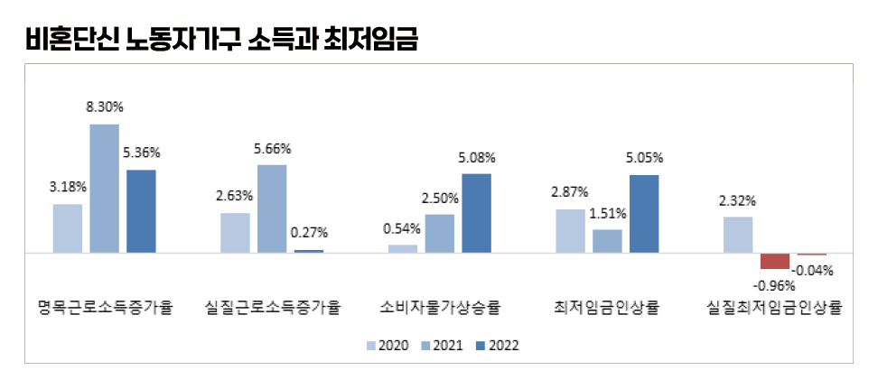

박영삼의 통계로 보는 노동
노동자가구 실질소득 증가율 ‘마이너스’ 경고등
비혼단신가구 실질경상소득 0.6% 감소 … 최저임금 실질가치 2년 연속 하락
최저임금법에서는 최저임금 결정 기준으로 ‘근로자의 생계비, 유사 근로자의 임금, 노동생산성 및 소득분배율’ 4가지 요소를 제시하고 있다. 이 가운데 첫 번째 기준에 해당하는 ’생계비’와 관련한 분석 보고서가 지난 18일 최저임금위원회 생계비전문위원회에 보고됐다.
한국통계학회가 최저임금위에서 연구용역을 받아 작성한 제출한 보고서에서는 지난해 우리나라 비혼단신 노동자가구의 실태생계비가 241만1천원으로 전년보다 9.3% 증가한 것으로 나타났다.
최저임금 인상률 회복해도 물가상승 압박에 직면
분석에 사용됐던 가계동향 원자료에 있는 2천562개 표본가구의 소득자료를 다시 분석해 봤다. 이들은 우리나라 2천104만7천가구 중 260만 가구를 대표한다. 1인 가구 중 임금노동자로 취업 중이면서 자가소유 주택이 아닌 전·월세로 거주하는 가구로 한정된다. 이들 비혼단신 노동자가구의 지난해 연평균 근로소득은 293만5천원으로 전년 대비 5.36% 증가했다. 하지만 소비자물가지수를 감안한 실질소득은 0.27% 증가에 그친 것으로 나타났다. 그렇다면 다른 시장소득과 가족·정부로부터의 이전소득까지 합친 경상소득은 어떠했을까? 2022년 경상소득은 평균 312만원으로 전년 대비 4.4% 증가했지만 소비자물가지수를 반영한 실질소득은 -0.6%로 오히려 감소한 것으로 나온다.
1인 노동자가구의 소득에서 근로소득은 절대적인 비중을 차지한다. 그리고 저소득 가구일수록 최저임금과 소비자물가의 변화에 큰 영향을 받는다. 2021년 최저임금은 코로나19 위기 상황에서 결정됐다. 인상률은 1989년 최저임금제도가 시행된 이후 가장 낮은 1.5%였다. 그리고 2022년 최저임금인상률은 5.1%로 회복됐지만 이번에는 가파른 물가상승의 압박에 직면했다. 그 결과 최저임금의 실질가치는 2021년 -0.96%, 2022년 -0.04%로 하락해 2년 연속 마이너스를 기록하는 상황에 놓이게 됐다.


나빠진 임금분배지표, 낮아진 최저임금 인상 영향
고용노동부가 24일 발표한 고용형태별 근로실태조사에서 임금분배지표가 악화로 반전한 것도 이런 상황과 무관하지 않다. 2017년 이후 5년 연속 감소하던 저임금 노동자 비중이 2022년 증가한 것으로 나타났고, 2015년 이후 지속하던 5분위배율의 하락세도 2021년에 멈춘 뒤 2022년 다시 상승한 것으로 나타났다. 최저임금이 16.4% 인상됐던 2018년 하위 20% 노동자의 임금이 11.9% 상승할 때 상위 20%의 임금인상은 3.3%에 그쳤다. 저임금계층일수록 높은 임금인상이 이뤄졌지만, 2022년에는 하위 20%의 임금인상률이 물가상승률의 5.8%에 그친 대신, 고임금으로 갈수록 임금인상률이 높아지는 역전 현상이 발생한 것이다. 이런 상황에서 임금분배가 나빠지는 것은 어쩌면 당연한 결과다.

비슷한 사실은 국세청의 근로소득 천분위 자료에 분석에서도 확인된다. 2018년 귀속분 근로소득을 분석한 결과 하위 31%에 해당하는 소득구간의 전년 대비 소득이 15.7% 증가해 가장 높은 증가율을 기록했다. 이들의 총급여는 평균 1천880만원으로 같은해 시간당 최저임금 7천530원을 연액으로 환산한 1천888만원과 거의 일치했다. 최저임금이 10.9% 인상됐던 2019년에도 근로소득이 가장 많이 증가한 구간은 하위 32%(총급여 2천76만원)였고 이들의 근로소득 증가율은 12.7%였다. 최저임금 연액 2천94만원과 역시 동일한 수준이다. 반면 최저임금 인상률이 1.5%였던 2021년에는 정반대로 하위 32%의 구간 소득증가율이 가장 낮았다. 이들의 연간 총급여는 2천170만원으로 시간당 최저임금 8천720원의 연액 2천187만원과 거의 같았다.
적어도 근로소득에 있어서는 최저임금 인상 수준이 하위 30% 전후 구간의 근로소득 결정과 임금분배에 미치는 영향이 결정적이라는 점을 말해 준다. 최저임금이 크게 인상된 해에는 소득분배가 개선되고 인상률이 크게 하락한 해에는 소득분배 개선이 둔화하거나 악화한다.
내년 최저임금 인상률 낮으면…저임금 노동자 가구 고통 커져
2년 연속 최저임금 실질인상률이 마이너스를 기록한 상황에서 내년도 최저임금은 어떻게 결정될 것인가. 정부는 올해 소비자물가 상승률을 3.5%로 전망하고 있다. 하지만 올해 1분기 소비자물가 상승률이 이미 4.7%를 기록하고 있다. 더구나 지난해 2분기 이후 전체 가구의 전년 대비 시장소득 증가율은 7.1%(지난해 3분기), 6.4%(지난해 4분기), 5.3%(올해 1분기)로 추세적으로 하락하고 있다. 반면 물가상승률은 3% 미만 수준에서 5.4%, 5.9%, 5.3%로 높아져 실질시장소득 증가율이 0%로 낮아진 상태이다.
지금과 같은 상황 속에서 2024년 최저임금이 낮은 수준에서 결정된다면 저임금 노동자 가구가 받아 안아야 할 고통은 더욱 커질 수밖에 없다. 정부는 시장에도 손을 놓고 있고 재정을 통한 적극적 재분배에도 관심이 없는 상태다. 이런 상황에서 최저임금마저 버팀목이 돼 주지 못한다면 임금불평등과 소득분배 악화는 일시적 반전이 아니라 추세적 기조로 이어질 위험이 크다.
고려대 노동문제연구소 노동데이터센터장 (youngsampk@gmail.com)